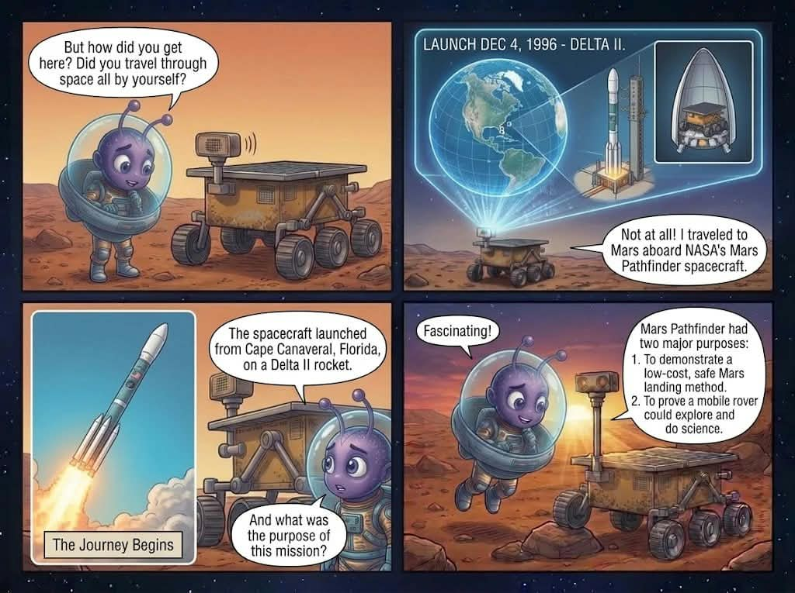
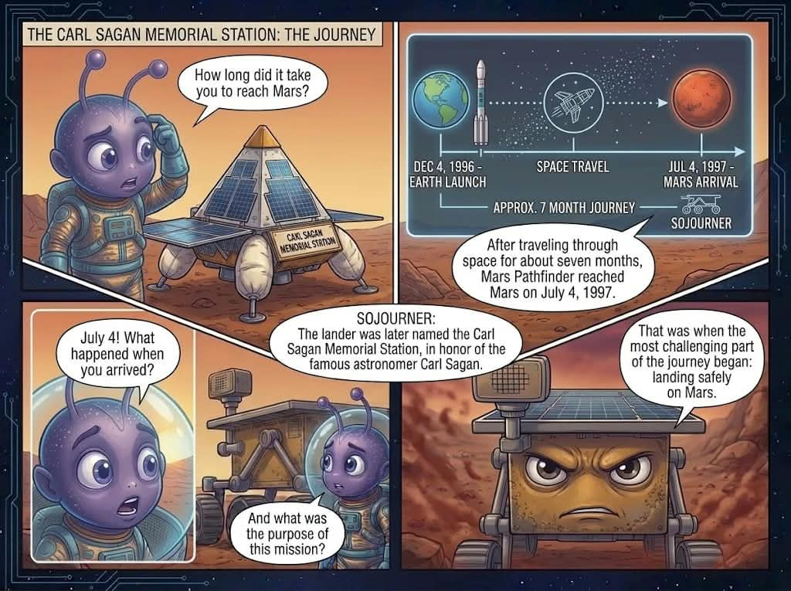
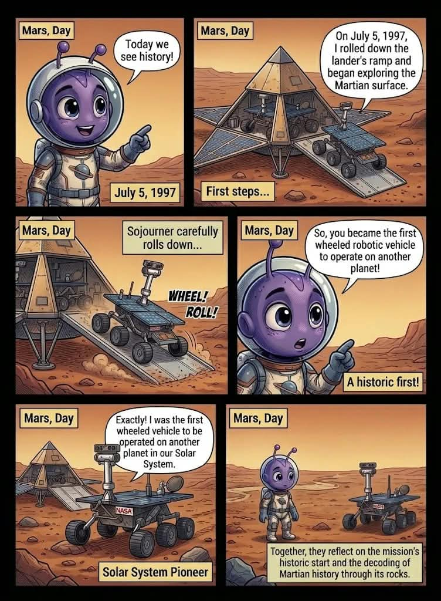
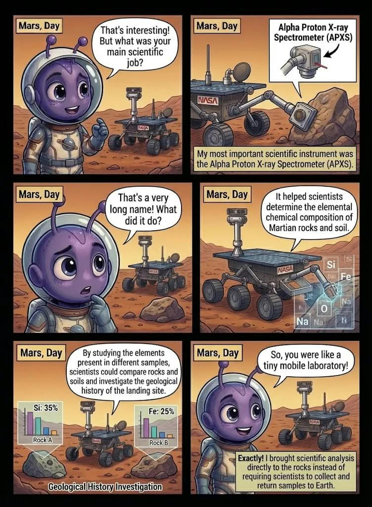
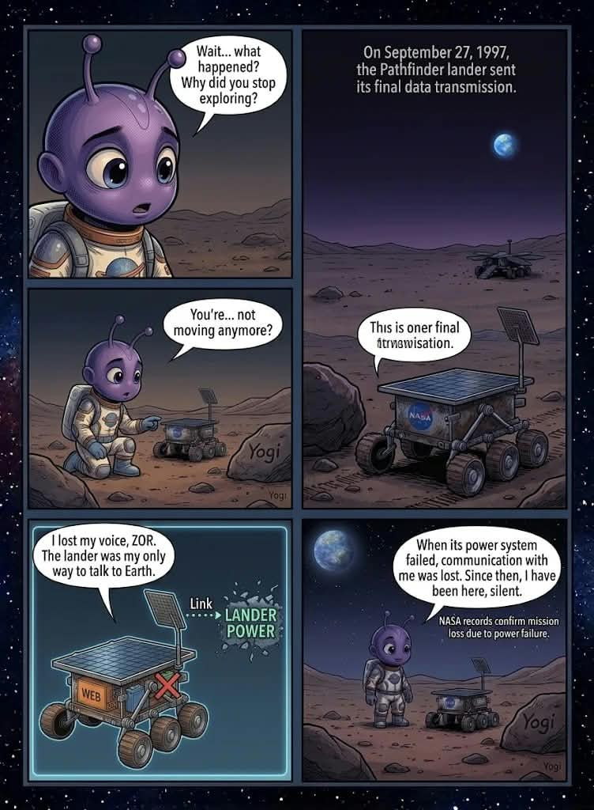

NASA ARCHIVE
THE MOON · APOLLO
The Lunar Module
Humanity’s first steps on another world left a descent stage behind.
Read the mission story ↗NASA ARCHIVE · REAL MISSIONS · SCIENCE DATA
Meet the machines NASA left on the Moon and Mars. Discover what they were built to do, what they found, and why their stories still matter.
ORIGINAL ILLUSTRATED MISSION STORIES
Explore each mission through its most important moments, arranged in the order they happened.

01THE LAUNCHEarth · December 1996
02TOUCHDOWNMars · 4 July 1997
03FIRST ROLLOUTFirst rover operations
04THE SCIENCEAPXS · Rock analysis
05FINAL SIGNAL27 September 1997Beyond the mission
Built around NASA Space Apps 2026 Challenge 01: Abandoned but Not Forgotten. Explore the machines left on the Moon and Mars, separate retired hardware from active missions, and follow each discovery back to NASA sources.
NASA archive · Visual chronicle
Explore the real hardware, the missions behind it, and the evidence preserved in NASA’s image archive. Every photograph links to its original NASA record.
Humanity’s first steps on another world left a descent stage behind.
Read the mission story ↗Instruments left on the lunar surface continued returning scientific measurements.
Read the mission story ↗A lander and a small rover changed how we explored the Martian surface.
Read the mission story ↗Its instruments helped reveal the interior structure and seismic activity of Mars.
Read the mission story ↗Interactive learning · Mission investigation
Become a mission investigator. Use what you learned from the archive to connect each machine with the science it made possible.
FIELD QUESTION
Learning activity based on the mission records in this archive. Each answer includes a NASA source so you can verify the evidence.
Deep dive · Science data & evidence
Move beyond the photographs and inspect documented instruments, mission records, and research archives.
Explore documented Apollo station locations and instrument metadata. Historical recordings are distinguished from explanatory diagrams.
Open the lunar data explorer ↗Understand SEIS, HP³, and RISE, including what each instrument measured and the documented limits of the mission.
Explore InSight science ↗Search original mission photographs and open the NASA source record for image identification and provenance.
Search NASA’s archive ↗Research integrity: photographs are retrieved from NASA’s public archive; mission facts link to primary sources. Illustrations and explanatory graphics are never labeled as original NASA photographs or raw telemetry.